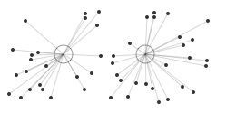

pattern.vector
The pattern.vector module contains easy-to-use machine learning tools, starting from word count functions, bag-of-word documents and a vector space model, to latent semantic analysis and algorithms for clustering and classification (Naive Bayes, k-NN, Perceptron, SVM).
It can be used by itself or with other pattern modules: web | db | en | search | vector | graph.

Documentation
- Word count
- TF-IDF
- Document
- Model
- Latent Semantic Analysis
- Clustering (k-means, hierarchical)
- Classification (nb, knn, slp, svm)
- Genetic algorithm
Word count
One way to measure which words in a text matter is to count the number of times each word appears in the text. Different texts can then be compared, based on the keywords they share. This is an important task in many text mining applications, e.g., search engines, social network monitoring, targeted ads, recommender systems ("you may also like"), and so on.
The words() and count() functions can be used to count words in a given string:
words(string,
filter = lambda w: w.strip("'").isalnum(),
punctuation = '.,;:!?()[]{}`''\"@#$^&*+-|=~_')
count(
words = [],
top = None, # Filter words not in the top most frequent (int).
threshold = 0, # Filter words whose count <= threshold.
stemmer = None, # PORTER | LEMMA | function | None
exclude = [], # Filter words in the exclude list.
stopwords = False, # Include stop words?
language = 'en') # en, es, de, fr, it, nl
- words() returns a list of words by splitting the string on spaces.
Punctuation marks are stripped from words. If filter(word) is False, the word is excluded. - count() takes a list of words and returns a dictionary of (word, count)-items.
Stop words & stemming
Stop words are common words (e.g. I, the, very, about) that are ignored with count(stopwords=False). There is no definite list of stop words, so you may need to tweak it.
With count(stemmer=PORTER), the stem() function is used to normalize words. For example, consisted and consistently are stemmed to consist, and spies is stemmed to spi (Porter2 stemming algorithm).
With count(stemmer=LEMMA), the pattern.en.singularize() and conjugate() functions are used to normalize words if a parsed Sentence or Text is given. This is more robust, but also slower.
stem(word, stemmer=PORTER)
>>> from pattern.vector import stem, PORTER, LEMMA
>>>
>>> print stem('spies', stemmer=PORTER)
>>> print stem('spies', stemmer=LEMMA)
spi
spy>>> from pattern.vector import count, words, PORTER, LEMMA
>>>
>>> s = 'The black cat was spying on the white cat.'
>>> print count(words(s), stemmer=PORTER)
>>> print count(words(s), stemmer=LEMMA)
{u'spi': 1, u'white': 1, u'black': 1, u'cat': 2}>>> from pattern.vector import count, LEMMA
>>> from pattern.en import parse, Sentence
>>>
>>> s = 'The black cat was spying on the white cat.'
>>> s = Sentence(parse(s))
>>> print count(s, stemmer=LEMMA)
{u'spy': 1, u'white': 1, u'black': 1, u'cat': 2, u'.': 1} Character n-grams
Another counting technique is to split a text into sequences of n successive characters. Although these are more difficult to interpret, they can be quite effective for comparing texts.
chngrams(string="", n=3, top=None, threshold=0, exclude=[])
>>> from pattern.vector import chngrams
>>> print chngrams('The cat sat on the mat.', n=3)
{' ca': 1, 'at ': 2, 'he ': 2, 't o': 1,
' ma': 1, 'at.': 1, 'mat': 1, 't s': 1,
' on': 1, 'cat': 1, 'n t': 1, 'the': 2,
' sa': 1, 'e c': 1, 'on ': 1,
' th': 1, 'e m': 1, 'sat': 1
}
Term frequency – inverse document frequency
Word count or term frequency (tf) is a measure of a word's relevance in a text. Similarly, document frequency (df) is a measure of a word's relevance across multiple texts. Dividing term frequency by document frequency yields tf-idf, a measure of how important or unique a word is in a text in relation to other texts. For example, even if the words "the" and "is" may occur frequently in one text, they are not that important in this text, since they occur frequently in may other texts. This can be used to build a search engine, for example. If a user queries for "cat", the search engine returns the pages that have a high tf-idf for "cat".
| Metric | Description |
| tf | number of occurences of a word / number of words in document |
| df | number of documents containing a word / number of documents |
| idf | ln(1/df) |
| tf-idf | tf * idf |
Cosine similarity
A document vector is a dictionary of distinct words in a document (i.e., text, paragraph, sentence) with their tf-idf. Higher tf-idf indicates words that are more important (i.e., keywords). A collection of document vectors is called a vector space model, a matrix of words x documents. By calculating the matrix dot product (angle) of two document vectors, we can measure how similar they are. This is called cosine similarity.
Let v1, v2 be Document.vector objects:
cosθ = dot(v1, v2) / (v1.norm * v2.norm)
Document
A Document is an unordered bag-of-words representation of a given string, dictionary of (word, count)-items, Sentence or Text. Documents can be bundled in a Model. Bag-of-words means that the word order in the given text is discarded. Instead, words are counted using the words(), count() and stem() and functions. This exposes keywords (= high word count) in the text, by which documents can be compared for similarity.
The Document.words dictionary maps words to word count. The generalized Document.vector dictionary maps features (e.g., words) to feature weights (e.g., relative word count). We call them features because they can be other things besides words in a text, for example id's or labels. For a document that is not part of a Model, the feature weights are TF, relative frequency between 0.0–1.0. This is useful when comparing long vs. short texts. Say we have a 10,000-word document that mentions "cat" 5000x and a 10-word document that mentions "cat" 5x. They are quite similar since they both mention "cat" 50% (0.5) of the time. Documents that are part of a Model can use different weighting schemes such as TF, TFIDF, IG and BINARY.
document = Document(string,
filter = lambda w: w.lstrip("'").isalnum(),
punctuation = '.,;:!?()[]{}\'`"@#$*+-|=~_',
top = None, # Filter words not in the top most frequent.
threshold = 0, # Filter words whose count falls below threshold.
exclude = [], # Filter words in the exclude list.
stemmer = None, # STEMMER | LEMMA | function | None.
stopwords = False, # Include stop words?
name = None,
type = None,
language = None,
description = None)document.id # Unique number (read-only). document.name # Unique name, or None, used in Model.document(). document.type # Document type, used with classifiers. document.language # Document language (e.g., 'en'). document.description # Document info. document.model # The parent Model, or None. document.features # List of words from Document.words.keys(). document.words # Dictionary of (word, count)-items (read-only). document.wordcount # Total word count. document.vector # Cached Vector (read-only dict).
document.tf(word) document.tfidf(word) # Note: simply yields tf if model is None. document.keywords(top=10, normalized=True)
document.copy()
- Document.tf() returns the frequency of a word as a number between 0.0-1.0.
- Document.tfidf() returns the word's relevancy as tf-idf.
- Document.keywords() returns a sorted list of (weight, word)-tuples.
With normalized=True the weights will be between 0.0-1.0 (their sum is 1.0).
For example:
>>> from pattern.vector import Document >>> >>> s = ''' >>> The shuttle Discovery, already delayed three times by technical problems >>> and bad weather, was grounded again Friday, this time by a potentially >>> dangerous gaseous hydrogen leak in a vent line attached to the shipʼs >>> external tank. The Discovery was initially scheduled to make its 39th >>> and final flight last Monday, bearing fresh supplies and an intelligent >>> robot for the International Space Station. But complications delayed the >>> flight from Monday to Friday, when the hydrogen leak led NASA to conclude >>> that the shuttle would not be ready to launch before its flight window >>> closed this Monday. >>> ''' >>> d = Document(s, threshold=1) >>> print d.keywords(top=6) [(0.17, u'flight'), (0.17, u'monday'), (0.11, u'delayed'), (0.11, u'discovery'), (0.11, u'friday'), (0.11, u'hydrogen') ]
Document vector
A Document.vector is a read-only, sparse (non-zero values) dict of (feature, weight)-items, where weight is the relative frequency (TF) of a feature in the document. Documents can be bundled in a Model with other weighting schemes such as TFIDF, IG and BINARY.
vector = Document.vector
vector = Vector(*args, **kwargs) # Same arguments as dict().
The pattern.vector module has the following low-level functions for vectors (or dicts):
normalize(vector) # Adjusts weights so sum is 1.
tfidf(vectors=[], base=2.72) # Adjusts weights to tf * idf.
distance(v1, v2, method=COSINE) # COSINE | EUCLIDEAN | MANHATTAN | HAMMING
features(vectors=[] # Returns the set() of unique features.
centroid(vectors=[]) # Returns the mean Vector.
cluster(method=KMEANS, vectors=[], distance=COSINE, **kwargs)
- relative() and tfidf() modify and return the vectors in-place for performance.
- distance() can also take a user-defined function as method that returns 0.0–1.0.
Cosine similarity for two vectors v1 and v2 = 1 - distance(v1, v2). - cluster() takes optional parameters k, iterations, seed and p – see clustering.
>>> from pattern.vector import Vector, distance
>>>
>>> v1 = Vector({"curiosity": 1, "kill": 1, "cat": 1})
>>> v2 = Vector({"curiosity": 1, "explore": 1, "mars": 1})
>>> print 1 - distance(v1, v2)
0.33
Model
A Model (previously Corpus) or vector space model is a collection of Document objects. Each Document.vector in a model is a dictionary of features (e.g., words) and feature weights (e.g., word count). Essentially, a model is then a sparse matrix with documents as rows, features as columns, and feature weights as cells. Mathematical functions can be used on the matrix. For example, to compute how similar two documents are, based on the features they have in common.
A Model has a weighting scheme that determines how the feature weights in each document vector are calculated. The weight parameter can be set to TF (relative term frequency), TFIDF, (term frequency vs. document frequency), IG (information gain), BINARY (0 or 1) or None (original weights).
model = Model(documents=[], weight=TFIDF)
model = Model.load(path) # Imports file created with Model.save().
model.documents # List of Documents (read-only). model.document(name) # Yields document with given name (unique). model.inverted # Dictionary of (word, set(documents))-items. model.vector # Dictionary of (word, 0.0)-items. model.vectors # List of all Document vectors. model.features # List of all Document.vector.keys(). model.classes # List of all Document.type values. model.weight # Feature weights: TF | TFIDF | IG | BINARY | None model.density # Overall word coverage (0.0-1.0). model.lsa # Concept space, set with Model.reduce().
model.append(document) model.remove(document) model.extend(documents) model.clear()
model.df(word) # Document frequency (0.0-1.0). model.idf(word) # log(1/df) model.similarity(document1, document2) # Cosine similarity (0.0-1.0). model.neighbors(document, top=10) # (similarity, document) list. model.search(words=[], **kwargs) # (similarity, document) list. model.distance(document1, document2, method=COSINE) # COSINE | EUCLIDEAN | MANHATTAN model.cluster(documents=ALL, method=KMEANS) # KMEANS | HIERARCHICAL model.reduce(dimensions=L2) # L1 | L2 | TOP300 | int
model.infogain(word) # Entropy (≈predictability). model.filter(features=[], documents=[]) # Model with selected features. model.feature_selection(top=100, method=IG, threshold=0.0) # Informative features.
model.sets(threshold=0.5) # Frequent word sets.
model.save(path, update=False) model.export(path, format=ORANGE) # ORANGE | WEKA
- Model.df() returns document frequency of a feature, as a value between 0.0-1.0.
- Model.idf() returns the inverse document frequency (or None if a feature is not in the model).
- Model.similarity() returns the cosine similarity of two Documents between 0.0-1.0.
- Model.neighbors() returns a sorted list of (similarity, Document)-tuples.
- Model.search() returns a sorted list of (similarity, Document)-tuples, based on a list of query words. A Document is created on-the-fly for the given list, using the given optional arguments.
- Model.sets() returns a dictionary of (set(words), frequency)-items of word combinations and their relative frequency above the given threshold (0.0-1.0).
The following example demonstrates the tf-idf weighting scheme and cosine similarity:
>>> from pattern.vector import Document, Model, TFIDF
>>>
>>> d1 = Document('A tiger is a big yellow cat with stripes.', type='tiger')
>>> d2 = Document('A lion is a big yellow cat with manes.', type='lion',)
>>> d3 = Document('An elephant is a big grey animal with a slurf.', type='elephant')
>>>
>>> print d1.vector
>>>
>>> m = Model(documents=[d1, d2, d3], weight=TFIDF)
>>>
>>> print d1.vector
>>> print
>>> print m.similarity(d1, d2) # tiger vs. lion
>>> print m.similarity(d1, d3) # tiger vs. elephant
{u'tiger': 0.25, u'stripes': 0.25, u'yellow': 0.25, u'cat': 0.25} # TF
{u'tiger': 0.27, u'stripes': 0.27, u'yellow': 0.10, u'cat': 0.10} # TFIDF
0.12
0.0
In this example we created documents with descriptions of a tiger, a lion and an elephant. When we print the tiger vector, all the feature weights are equal (TF). But when we group the documents in a model, the weight of tiger features yellow and cat diminishes, because these features also appear in lion (TFIDF).
We then compare tiger with lion and elephant and, as it turns out, tiger is more similar to lion. The similarity is quite low (12%), because in this example 2/3 of all documents (tiger and lion) share most of their features. If we continue to add, say, 10,000 documents for other animals (e.g. "A squirrel is a small rodent with a tail.") the similarity will rise, since the difference in word usage for different types of animals will stand out more clearly.
If we had multiple descriptions for each animal – each a Document with a type – we could use Model.neighbors() to retrieve a list of the top most similar documents for a given (unknown) document, and then check which type in the list predominates (= a majority vote). This is essentially what a KNN classifier does.
Model cache
The calculations in Model.df() (document frequency), Model.similarity() (cosine similarity) and Model.infogain() (information gain) are cached for faster performance.
Note that whenever a document is added to or removed from a model with a TFIDF or IG weighting scheme, the cache is cleared, since new features will change the weights. So if you need to add a lot of documents (e.g., 10,000+), use Document.extend() with a list of documents for faster performance.
Model import & export
Model.save() exports the model as a binary file using the Python cPickle module, including the cache. With Model.save(update=True), all possible vectors and similarities will be calculated and cached before saving. The classmethod Model.load() returns a Model from the given file created with Model.save().
Model.export() exports a file that can be used with popular machine learning software. With ORANGE, it generates a tab-separated text file for Orange. With WEKA, it generates an ARFF text file for Weka.
Latent semantic analysis
Latent Semantic Analysis (LSA) is a statistical technique based on singular value decomposition (SVD). [1] [2]. It groups related features in the model into concepts (e.g., purr + fur + claw = feline concept). This is called dimensionality reduction. Each document in the model then gets a concept vector, a compressed approximation of the original vector that may be faster for cosine similarity, clustering and classification.
SVD requires the Python NumPy package (installed by default on Mac OS X). Given a matrix of documents × features, it yields a matrix U with documents × concepts, a diagonal matrix Σ with singular values, and a matrix Vt with concepts × features.
from numpy.linalg import svd
from numpy import dot, diag
u, sigma, vt = svd(matrix, full_matrices=False)
for i in range(-k, 0):
sigma[i] = 0 # Reduce k smallest singular values.
matrix = dot(u, dot(diag(sigma), vt))Reference: Wilk J. (2007). http://blog.josephwilk.net/projects/latent-semantic-analysis-in-python.html
The following figure illustrates LSA for a document of words that commonly occur after the word nice:
|
|

LSA concept space
The Model.reduce() method calculates SVD and stores the concept space in Model.lsa. The optional dimensions parameter defines the number of dimensions in the concept space: TOP300, L1, L2 (default), an int or a function. There is no universal optimal value, too many dimensions may result in noise while too few may remove useful information.
When Model.lsa is set, Model.similarity(), neighbors(), search() and cluster() will subsequently compute in LSA concept space. To undo the reduction, set Model.lsa to None. Adding or removing documents in the model will also undo the reduction.
lsa = Model.reduce(dimensions=L2)
lsa = Model.lsa
lsa = LSA(model, k=L2)
lsa.model # Parent Model.
lsa.features # List of features, same as Model.features.
lsa.concepts # List of concepts, each a {feature: weight} dict.
lsa.vectors # {Document.id: {concept_index: weight}}lsa.transform(document)
| Dimensions | Description |
| TOP300 | Keep the top 300 dimensions (rule of thumb). |
| L1 | L1-norm of the singular values as the number of dimensions to remove. |
| L2 | L2-norm of the singular values as the number of dimensions to remove. |
| int | An int that is the number of dimensions to remove. |
| function | A function that takes the list of singular values and returns an int. |
LSA.transform() takes a Document and returns its Vector in concept space. This is useful for documents that are not part of the model – see also Classifier.classify().
The following example demonstrates how related features are grouped after LSA:
>>> from pattern.vector import Document, Model
>>>
>>> d1 = Document('The cat purrs.', name='cat1')
>>> d2 = Document('Curiosity killed the cat.', name='cat2')
>>> d3 = Document('The dog wags his tail.', name='dog1')
>>> d4 = Document('The dog is happy.', name='dog2')
>>>
>>> m = Model([d1, d2, d3, d4])
>>> m.reduce(2)
>>>
>>> for d in m.documents:
>>> print
>>> print d.name
>>> for concept, w1 in m.lsa.vectors[d.id].items():
>>> for feature, w2 in m.lsa.concepts[concept].items():
>>> if w1 != 0 and w2 != 0:
>>> print (feature, w1 * w2)
The model is reduced to two dimensions. So there are two concepts in the concept space. Each document has a concept vector with weights for each concept. As illustrated below, cat features have been grouped together and dog features have been grouped together.
| concept | cat | curiosity | dog | happy | killed | purrs | tail | wags |
| 0 | 0.00 | 0.00 | +0.52 | +0.78 | 0.00 | 0.00 | +0.26 | +0.26 |
| 1 | -0.52 | -0.26 | 0.00 | 0.00 | -0.26 | -0.78 | 0.00 | 0.00 |
| concept | d1 (cat1) | d2 (cat2) | d3 (dog1) | d4 (dog2) |
| 0 | 0.00 | 0.00 | +0.45 | +0.90 |
| 1 | -0.90 | -0.45 | 0.00 | 0.00 |
Dimensionality reduction is useful with Model.cluster(). Clustering algorithms are exponentially slow (i.e., 3 nested for-loops). Clustering a model of a 1,000 documents with a 1,000 features takes a couple of minutes. However, it takes a couple of seconds to reduce this model to concept vectors with a 100 features, after which k-means clustering also runs in a couple of seconds. Note that document vectors are stored in sparse format (i.e., features with weight 0.0 are omitted), so it is often not necessary to reduce the model. Even if the model has a 1,000 features, each document might have no more than 5-10 features. To get an idea of the average document vector length:
sum(len(d.vector) for d in model.documents) / float(len(model))
Clustering
Clustering is an unsupervised machine learning method that can be used to partition a set of unlabeled documents (i.e., Document objects without a type). Since the label (class, type, category) of a document is not known, clustering will attempt to create clusters (categories) of similar documents by measuring the distance between the document vectors. The optimal solution is then a set of dense clusters, where each cluster is made up of documents with the smallest possible distance between them.
Say we have a number of 2D points with coordinates x and y (horizontal and vertical position). Some points will be further apart than others. The figure below illustrates how we can partition the points by measuring their distance to two centroids. More centroids create more clusters. The principle holds for 3D points with x, y and z coordinates, or any n-D points (x, y, z, ..., n). This is how the k-means clustering algorithm works. A Document.vector is an n-dimensional point. Instead of coordinates x and y it has n features (words) and feature weights. We can calculate the distance between document vectors with cosine similarity.
 random points in 2D random points in 2D |
points by distance to centroid |
The Model.cluster() method returns a list of clusters using the KMEANS or the HIERARCHICAL algorithm. The optional distance parameter can be COSINE (default), EUCLIDEAN, MANHATTAN or HAMMING. An optional documents parameter can be a selective list of documents in the model to cluster.
clusters = Model.cluster(method=KMEANS, k=10, iterations=10, distance=COSINE)
clusters = Model.cluster(method=HIERARCHICAL, k=1, iterations=1000, distance=COSINE)
>>> from pattern.vector import Document, Model, HIERARCHICAL
>>>
>>> d1 = Document('Cats are independent pets.', name='cat')
>>> d2 = Document('Dogs are trustworthy pets.', name='dog')
>>> d3 = Document('Boxes are made of cardboard.', name='box')
>>>
>>> m = Model((d1, d2, d3))
>>> print m.cluster(method=HIERARCHICAL, k=2)
Cluster([
Document(id=3, name='box'),
Cluster([
Document(id=2, name='dog'),
Document(id=1, name='cat')
])
])k-means clustering
The k-means clustering algorithm partitions a set of unlabeled documents into k clusters, using k random centroids. It returns a list containing k lists of similar documents.
Model.cluster(method=KMEANS, k=10, iterations=10, distance=COSINE, seed=RANDOM, p=0.8)
The advantage of k-means is that it is fast. The drawback is that an optimal solution is not guaranteed, since the position of the centroids is random. Each iteration, the algorithm will swap documents between clusters to create denser clusters.
The optional seed parameter be RANDOM or KMPP. The KMPP or k-means++ initialization algorithm can be used to find better centroids. In many cases this is also faster. The optional parameter p sets the "relaxation" of the k-means algorithm. Relaxation is based on a mathematical trick called triangle inequality, where p=0.5 is stable but slow and p=1.0 is prone to errors but faster, especially for higher k and document vectors with many features (i.e., higher dimensionality).
References:
Arthur, D. (2007). k-means++: the advantages of careful seeding. SODA'07 Proceedings.
Elkan, C. (2003). Using the Triangle Inequality to Accelerate k-Means. ICML'03 Proceedings.
Hierarchical clustering
The hierarchical clustering algorithm returns a tree of nested clusters. The top level item is a Cluster, a mixed list of Document and (nested) Cluster objects.
Model.cluster(method=HIERARCHICAL, k=1, iterations=1000, distance=COSINE)
The advantage of hierarchical clustering is that the optimal solution is guaranteed. Each iteration, the algorithm will cluster the two nearest documents. The drawback is that it is slow.
A Cluster is a list of Document and Cluster objects, with some additional properties:
cluster = Cluster([])
cluster.depth # Returns the maximum depth of nested clusters. cluster.flatten(depth=1000) # Returns a flat list, down to the given depth. cluster.traverse(visit=lambda cluster: None)
>>> from pattern.vector import Cluster >>> >>> cluster = Cluster((1, Cluster((2, Cluster((3, 4)))))) >>> print cluster.depth >>> print cluster.flatten(1) 2 [1, 2, Cluster([3, 4])]
Note: the maximum recursion depth in Python is 1,000. For deeper clusters, raise sys.setrecursionlimit().
Centroid
The centroid() function takes a Cluster, or a list of Cluster, Document and Vector objects, and returns the mean Vector. The distance() function returns the distance between two vectors. A common problem is that a cluster has no meaningful descriptive name. One solution is to calculate its centroid, and use the Document.type of the document vector(s) nearest to the centroid.
centroid(vectors=[]) # Returns the mean Vector.
distance(v1, v2, method=COSINE) # COSINE | EUCLIDEAN | MANHATTAN | HAMMING
Classification
Classification can be used to predict the label of an unlabeled document. More specifically, classification is a supervised machine learning method that uses labeled documents (i.e., Document objects with a type) as training examples to statistically predict the label (class, type) of new documents, based on their similarity to the training examples using a distance metric (e.g., cosine similarity). A Document is a bag-of-words representation of a text, i.e., unordered words + word count. The Document.vector maps the words (or features) to their weight (absolute or relative word count, tf-idf, ...). The weight of a word represents its relevancy in the text. So we can compare how similar two documents are by measuring if they have relevant words in common. Given an unlabeled document, a classifier yields the label of the most similar document(s) in its training set. This implies that a larger training set with more features (and less labels) gives better performance.
For example, if we have a corpus of product reviews (training data) for which the star rating of each product review is known (labels, e.g., ★★★☆☆ = 3), we can use it to predict the star rating of other reviews, based on common words (features) in the text. We could represent each review as a vector of adjectives (e.g., good, bad, awesome, awful, ...) since positive reviews (good, awesome) will most likely contain different adjectives than negative reviews (bad, awful).
The pattern.vector module implements four classification algorithms:
- NB: Naive Bayes, based on the probability that a feature occurs in a class.
- KNN: k-nearest neighbor, based on the k most similar documents in the training set.
- SLP: single-layer averaged perceptron, based on an artificial neural network.
- SVM: support vector machine, based on a representation of the documents in a high-dimensional space separated by hyperplanes (see further).
classifier = NB(train=[], baseline=MAJORITY, method=MULTINOMIAL, alpha=0.0001)
classifier = KNN(train=[], baseline=MAJORITY, k=10, distance=COSINE)
classifier = SLP(train=[], baseline=MAJORITY, iterations=1)
classifier = SVM(train=[], type=CLASSIFICATION, kernel=LINEAR)
Classifier
The NB, KNN, SLP and SVM classifiers inherit from the Classifier base class:
classifier = Classifier(train=[], baseline=MAJORITY)
classifier = Classifier.load(path)
classifier.features # List of trained features (words). classifier.classes # List of trained class labels. classifier.binary # True if Classifier.classes == [True, False] or [0, 1]. classifier.distribution # Dictionary of (label, frequency)-items. classifier.baseline # Default predicted class (most frequent or user-given). classifier.majority # Most frequent class label. classifier.minority # Least frequent class label. classifier.skewness # 0.0 if the classes are evenly distributed.
classifier.train(document, type=None) classifier.classify(document, discrete=True)
classifier.confusion_matrix(documents=[]) classifier.test(documents=[], target=None) classifier.auc(documents=[], k=10)
classifier.finalize() # Trains + removes training data from memory.
classifier.save(path) # gzipped pickle file, load with Classifier.load().
- Classifier.train() trains the classifier with the given document and type (= class label).
A document can be a Document, Vector, dict, or a list or string of words (features).
If no type is given, Document.type will be used instead.
You can also use Classifier(train=[document1, document2, ...]) with a list or a Model. - Classifier.classify() returns the type with the highest probability for the given document.
If discrete=False, returns a dictionary of (class, probability)-items.
If the classifier is trained on an LSA model, you must supply the output of Model.lsa.transform(). - Classifier.test() returns an (accuracy, precision, recall, F1-score)-tuple.
The given test data can be a list of documents, (document, type)-tuples or a Model.
Training a classifier
Say we have a corpus of a 1,000 short movie reviews (reviews.csv.zip), each with a star rating given by the reviewer or customer. The corpus contains such instances as:
| Review | Rating |
| Amazing film! | ★★★★★ |
| Pretty darn good | ★★★★☆ |
| Rather disappointing | ★★☆☆☆ |
| How can anyone watch this drivel? | ☆☆☆☆☆ |
We can use the corpus to train a classifier that predicts the star rating of other reviews, based on word similarity. By creating a Document for each review we have control over what words (features) are included or not (e.g., stopwords). We will use a Naive Bayes (NB) classifier, but the examples will also work with KNN and SVM, since all classifiers inherit from Classifier.
>>> from pattern.vector import Document, NB
>>> from pattern.db import csv
>>>
>>> nb = NB()
>>> for review, rating in csv('reviews.csv'):
>>> v = Document(review, type=int(rating), stopwords=True)
>>> nb.train(v)
>>>
>>> print nb.classes
>>> print nb.classify(Document('A good movie!'))
[0, 1, 2, 3, 4, 5]
4 The review "A good movie!" is classified as ★★★★☆ because, based on the training data, the classifier learned that good is often related to higher star ratings.
Testing a classifier
How accurate is the classifier? Naive Bayes can be quite effective despite its simple implementation. In this example it has an accuracy of 60%. Given a set of testing data, NB.test() returns an (accuracy, precision, recall, F1-score)-tuple with values between 0.0–1.0:
NB.test(documents=[], target=None) # Returns (accuracy, precision, recall, F1).
>>> data = csv('reviews.csv')
>>> data = [(review, int(rating)) for review, rating in data]
>>> data = [Document(review, type=rating, stopwords=True) for review, rating in data]
>>>
>>> nb = NB(train=data[:500])
>>>
>>> accuracy, precision, recall, f1 = nb.test(data[500:])
>>> print accuracy
0.60Note how we used 1/2 of the data for training and reserve the other 1/2 of the data for testing.
Binary classification
The reported accuracy (60%) is not the worst baseline. Random guessing between the six possible star ratings (0-5) has only 17% accuracy. Moreover, many errors are off by only one (e.g., predicts ★ instead of ★★ or vice versa). If we simplify the task and train a binary classifier that predicts either positive (True → star rating 3, 4, 5) or negative (False → star rating 0, 1, 2), accuracy increases to 68%. This is because we now have only two classes to choose from and more training data per class.
>>> data = csv('reviews.csv')
>>> data = [(review, int(rating) >= 3) for review, rating in data]
>>> data = [Document(review, type=rating, stopwords=True) for review, rating in data]
>>>
>>> nb = NB(train=data[:500])
>>>
>>> accuracy, precision, recall, f1 = nb.test(data[500:])
>>> print accuracy
0.68
Skewed data
The reported accuracy can be misleading. Suppose we have a classifier that always predicts positive (True). We evaluate it with a test set that contains 1/2 positive reviews. So accuracy is 50%. We then evaluate it with a test set that contains 9/10 positive reviews. Accuracy is now 90%. This happens if the data is skewed, i.e., when it has more instances of one class and fewer of the other.
A more reliable evaluation is to look at both the rate of correct predictions and incorrect predictions, per class. This information can be derived from the confusion matrix.
Confusion matrix
A ConfusionMatrix is a matrix of actual classes × predicted classes, stored as a dictionary:
confusion = Classifier.confusion_matrix(documents=[])
confusion(target) # (TP, TN, FP, FN) for given class. confusion.table # Pretty string output.
>>> print nb.distribution
>>> print nb.confusion_matrix(data[500:])
>>> print nb.confusion_matrix(data[500:])(True) # (TP, TN, FP, FN)
{True: 373, False: 127}
{True: {True: 285, False: 94}, False: {False: 53, True: 68}}
(286, 53, 68, 93) | Class | Predicted class | |
| True | False | |
| True | 285 | 94 |
| False | 68 | 53 |
The class distribution shows that there are more positive reviews in the training data (373/500).
The confusion matrix shows that, by consequence, the classifier is good at predicting positive reviews (286/373 or 76%) but bad at predicting negative reviews (53/127 or 42%). Note how we call the ConfusionMatrix like a function. This returns a (TP, TN, FP, FN)-tuple for a given class, the amount of true positives ("hits"), true negatives ("rejects"), false positives ("errors") and false negatives ("misses").
Precision & recall
Precision is a measure of hits vs. errors. Recall is a measure of hits vs. misses. If the classifier has a low precision, negative cases are being misclassified as positive. If the classifier has a low recall, not all positive cases are being caught. F1-score is simply the harmonic mean of precision and recall.
Say we have an online shop that automatically highlights positive customer reviews. Negative reviews might contain profanity, so we want to focus on high precision to make sure that no swear words are highlighted. Say we hire a moderator to double-check highlighted reviews. In this case we can focus on high recall, to make sure that no positive review is overlooked. Our moderator will have to unhighlight some reviews by hand.
| Metric | Formula |
| Accuracy | (TP + TN) / (TP + TN + FP + FN) |
| Precision | TP / (TP + FP) |
| Recall | TP / (TP + FN) |
| F1-score | 2 x P x R / (P + R) |
>>> print nb.test(data[500:], target=True) >>> print nb.test(data[500:], target=False) >>> print nb.test(data[500:]) (0.676, 0.807, 0.752, 0.779) # A, P, R, F1 for predicting True. (0.676, 0.361, 0.438, 0.396) # A, P, R, F1 for predicting False. (0.676, 0.584, 0.595, 0.589) # A, P, R, F1 (macro-averaged).
In summary, the 59% F1-score is a more reliable estimate than the 68% accuracy.
K-fold cross-validation
K-fold cross-validation performs K tests on a given classifier, each time partitioning the given dataset into different subsets for training and testing, and returns the average (accuracy, precision, recall, F1, stdev). This is more reliable (= generalized) than always using the same training data.
kfoldcv(Classifier, documents=[], folds=10, target=None)
>>> from pattern.vector import NB, Document, kfoldcv
>>> from pattern.db import csv
>>>
>>> data = csv('reviews.csv')
>>> data = [(review, int(rating) >= 3) for review, rating in data]
>>> data = [Document(review, type=rating, stopwords=True) for review, rating in data]
>>>
>>> print kfoldcv(NB, data, folds=10)
(0.678, 0.563, 0.568, 0.565, 0.034) Note that kfoldcv() takes any parameters of the given Classifier as optional parameters:
>>> print kfoldcv(KNN, data, folds=10, k=3, distance=EUCLIDEAN)
As it turns out, our Naive Bayes classifier is not that accurate: 57% F1-score. We will need more training data and/or be more selective about our data. How about we just take the adjectives and exclamation marks in each review instead of the whole text?
Feature selection
The performance of a classifier relies on the availability of training data, and the quality of each document in the training data. The Document.vector may contain redundant or irrelevant features that reduce performance, or it may be missing features. Useful techniques that may increase performance include:
- Filter out noise. Raise the word count threshold with Document(threshold=0).
- Use part-of-speech tagging to select specific types of words (e.g., adjectives, punctuation, ...)
- Lemmatize features (purred → purr) with pattern.en's parse(lemmata=True).
- Use ngrams or chngrams() as features.
Note that you can pass a custom dictionary of (feature, weight)-items to the Document() constructor, instead of a string. You can also pass dictionaries directly to Classifier.train().
The following example improves the accuracy of our movie review classifier from 57% to 60% by selecting lemmatized adjectives (JJ), nouns (NN), verbs (VB) and exclamation marks from each review:
>>> from pattern.vector import NB, kfoldcv, count
>>> from pattern.db import csv
>>> from pattern.en import parsetree
>>>
>>> def v(review):
>>> v = parsetree(review, lemmata=True)[0]
>>> v = [w.lemma for w in v if w.tag.startswith(('JJ', 'NN', 'VB', '!'))]
>>> v = count(v)
>>> return v
>>>
>>> data = csv('reviews.csv')
>>> data = [(v(review), int(rating) >= 3) for review, rating in data]
>>>
>>> print kfoldcv(NB, data)
(0.631, 0.588, 0.626, 0.606, 0.044) Features can be selected automatically using Model.infogain(feature). Information gain is a measure of a feature's predictability for a class label (0.0-1.0). Some features will occur more frequently in documents with a certain class label (e.g., awesome → positive reviews, awful → negative reviews), hence they are more "informative" than features that occur in all documents, such as the and you.
This value is used in Model.feature_selection() to compute a sorted list of the most informative features. An optional document frequency threshold parameter (0.0-1.0) excludes features that only occur in a few documents (i.e., outliers).
Automatic feature selection is useful for documents with many features (e.g., 10,000). More features require more computation and can lead to overfitting. Overfitting means that the classifier is making assumptions based on irrelevant features (noise). It memorizes the training data instead of generalizing from trends.
>>> from pattern.vector import Model, Document, BINARY, NB, kfoldcv
>>> from pattern.db import csv
>>>
>>> data = csv('reviews.csv')
>>> data = [(review, int(rating) >= 3) for review, rating in data]
>>> data = [Document(review, type=rating, stopwords=True) for review, rating in data]
>>>
>>> model = Model(documents=data, weight=TF)
>>> model = model.filter(features=model.feature_selection(top=1000))
>>>
>>> print kfoldcv(NB, model)
(0.769, 0.689, 0.639, 0.662, 0.043)
Naive bayes
The Naive Bayes classifier is based on the probability that a feature occurs in a class, independent of other features, using Bayes' theorem.
classifier = NB(train=[], baseline=MAJORITY, method=MULTINOMIAL, alpha=0.0001)
With the MULTINOMIAL method, feature weights are used (0.0–1.0). With the BINOMIAL method, a feature is part of a document (1) or not (0). The alpha value is used to avoid a division by zero. If NB.classify() is unable to classify a document, it returns the baseline (by default, the most frequent class).
k-nearest neighbor
The k-nearest neighbor classifier is based on the k most similar documents in the training data, given some distance function for calculating similarity.
classifier = KNN(train=[], baseline=MAJORITY, k=10, distance=COSINE)
The given distance can be COSINE, EUCLIDEAN, MANHATTAN or HAMMING, or a user-given function that takes two dictionaries of (feature, weight)-items and returns a value between 0.0–1.0. If KNN.classify() is unable to classify a document, it returns the baseline (by default, the most frequent class).
Single-layer averaged perceptron
The perceptron classifier is a simple artificial neural network (ANN), based on weighted connections whose weights are iteratively fine-tuned during training.
classifier = SLP(train=[], baseline=MAJORITY, iterations=1)
Accuracy improves with more iterations (e.g., 3-4) over the training documents. Feature weights in each document are expected to be binary (0 or 1). If SLP.classify() is unable to classify a document, it returns the baseline (by default, the most frequent class).
Support vector machine
The SVM classifier is based on a representation of the documents in a high-dimensional space (e.g., 2D, 3D, ...) separated by hyperplanes.
classifier = SVM(type=CLASSIFICATION, kernel=LINEAR, train=[], **kwargs)
The given type can be CLASSIFICATION or REGRESSION.
The given kernel can be LINEAR, POLYNOMIAL or RADIAL.
| Kernel | Separation | Function |
| LINEAR | straight line | u' * v |
| POLYNOMIAL | curved line | (gamma * u' * v + coeff0) ** degree |
| RADIAL | curved path | exp(-gamma * abs(u-v) ** 2) |
Overview of optional parameters:
| Parameter | Value | Description |
| type | CLASSIFICATION, REGRESSION | REGRESSION returns a float value. |
| kernel | LINEAR, POLYNOMIAL, RADIAL | Kernel function used for separation. |
| degree | 3 | Used in POLYNOMIAL kernel. |
| gamma | 1 / len(SVM.features) | Used in POLYNOMIAL and RADIAL kernel. |
| coeff0 | 0 | Used in POLYNOMIAL kernel. |
| cost | 1 | Soft margin for training errors. |
| epsilon | 0.1 | Tolerance for termination criterion. |
| cache | 100 | Cache memory size in MB. |
| probability | False | CLASSIFICATION yields (weight, class) values. |
The SVM classifier uses kernel functions to divide the high-dimensional space. The simplest way to divide two clusters of points in 2D is a straight line (LINEAR). As illustrated below, moving the points to a higher dimensional (POLYNOMIAL or RADIAL) can make separation easier (using hyperplanes). The optional degree, gamma, coeff0 and cost can be used to tweak the kernel function.
 complex in low dimension complex in low dimension |
 simple in higher dimension simple in higher dimension |
Gridsearch
Different settings for degree, gamma, coeff0 and cost yield better or worse performance. Which settings to use? The gridsearch() function returns the K-fold cross-validation test results for every possible combination of optional parameters (given as lists of values):
gridsearch(Classifier, documents=[], folds=10, **kwargs)
>>> from pattern.vector import SVM, RADIAL, gridsearch, kfoldcv, count
>>> from pattern.db import csv
>>>
>>> data = csv('reviews.csv')
>>> data = [(count(review), int(rating) >= 3) for review, rating in data]
>>>
>>> for (A, P, R, F, o), p in gridsearch(SVM, data, kernel=[RADIAL], gamma=[0.1,1,10]):
>>> print (A, P, R, F, o), p
(0.756, 0.679, 0.517, 0.578, 0.091) {'kernel': RADIAL, 'gamma': 0.1}
(0.753, 0.452, 0.503, 0.465, 0.078) {'kernel': RADIAL, 'gamma': 1}
(0.753, 0.477, 0.503, 0.474, 0.093) {'kernel': RADIAL, 'gamma': 10} A (faster) poor man's linear SVM often produces results that are equally accurate:
>>> print kfoldcv(SVM, data, folds=10) (0.741, 0.617, 0.537, 0.570, 0.083)
Libsvm and Liblinear
The SVM implementation in Pattern relies on the LIBSVM and LIBLINEAR C++ libraries. Precompiled bindings are included for Windows, Mac OS X and Ubuntu. These may not work on your system. In this case you need to compile the bindings from source (see the instructions in pattern/vector/svm/INSTALL.txt).
Reference: Chang, C.-C., Lin, C.-J. (2011). LIBSVM: a library for support vector machines. ACM.
Genetic algorithm
A GA or genetic algorithm is an optimization technique based on evolution by natural selection. With each GA.update(), the fittest candidates (e.g., lists or objects) are selected and recombined into a new generation, converging towards optimal fitness. GA's can be used for automatic feature selection, for example.
ga = GA(candidates=[])
ga.population # List of candidates. ga.generation # Current generation (int). ga.avg # Average population fitness.
ga.fitness(candidate) ga.combine(candidate1, candidate2) ga.mutate(candidate)
ga.update(top=0.5, mutation=0.5)
The GA.fitness(), combine() and mutate() methods must be defined in a subclass.
- GA.fitness() returns the given candidate's fitness as a value (0.0–1.0).
- GA.combine() returns a new candidate that is a combination of the given candidates.
- GA.mutate() returns a new candidate that is a mutation of the given candidate.
- GA.update() populates GA.population with a new generation of candidates,
each a combination of the top fittest candidates with a chance of mutation (0.5 = 50%).
The following GA converges from random character sequences to neologisms (invented words).
>>> from pattern.vector import GA, chngrams >>> from pattern.en import lexicon >>> from random import choice >>> >>> def chseq(length=4, chars='abcdefghijklmnopqrstuvwxyz'): >>> # Returns a string of random characters. >>> return ''.join(choice(chars) for i in range(length)) >>> >>> class Jabberwocky(GA): >>> >>> def fitness(self, w): >>> return sum(0.2 for ch in chngrams(w, 4) if ch in lexicon) + \ >>> sum(0.1 for ch in chngrams(w, 3) if ch in lexicon) >>> >>> def combine(self, w1, w2): >>> return w1[:len(w1)/2] + w2[len(w2)/2:] # cut-and-splice >>> >>> def combine(self, w): >>> returns w.replace(choice(w), chseq(1), 1) >>> >>> # Start with 10 strings, each 8 random characters. >>> candidates = [''.join(chseq(8)) for i in range(10)] >>> >>> ga = Jabberwocky(candidates) >>> i = 0 >>> while ga.avg < 1.0 and i < 1000: >>> ga.update(top=0.5, mutation=0.3) >>> i += 1 >>> >>> print ga.population >>> print ga.generation >>> print ga.avg
In this example we are interested in creative language use. The GA's fitness function promotes substrings of 3–4 characters that are real words, ensuring that the invented words have a familiar feel. For example, spingrsh is not a real word, but spin, pin and ping are (+0.7). After a random mutation that replaces r with a, spingash also contains gas and gash, raising its fitness (+1.0).
By randomly combining sequences, we then end up with invented words such as spingash, skidspat, galagush, halfetee, clubelle, and sodasham.
The spingashes galagushed and the halfetees rupeeked,
An oofundoo sloboored.
The showshope skidspatted and the otherbits did dadampsi,
And the willsage widskits bratslared.
See also
- Orange (GPL): data mining & machine learning in Python, with a node-based GUI.
- PyBrain (BSD): powerful machine learning algorithms in Python + C.
- SciPy (BSD): scientific computing tools for Python.
- scikit-learn (BSD): machine learning algorithms tightly knit with numpy, scipy, matplotlib.